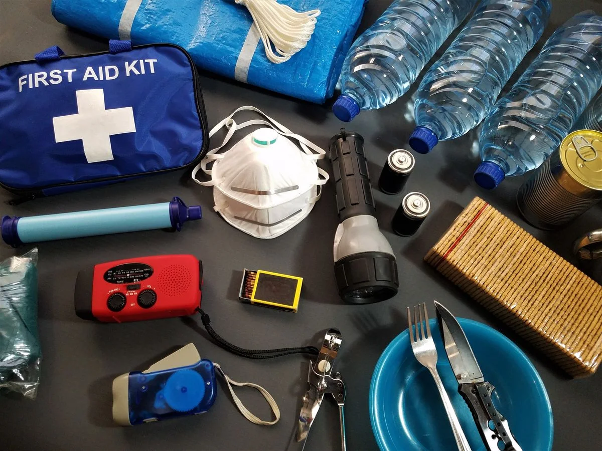
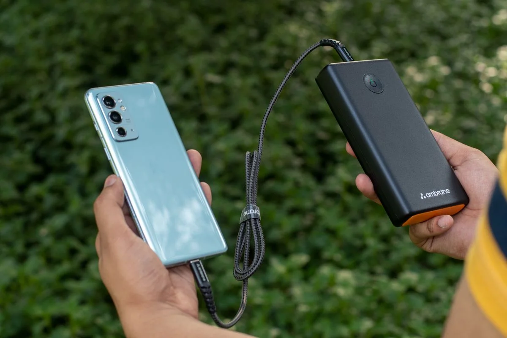
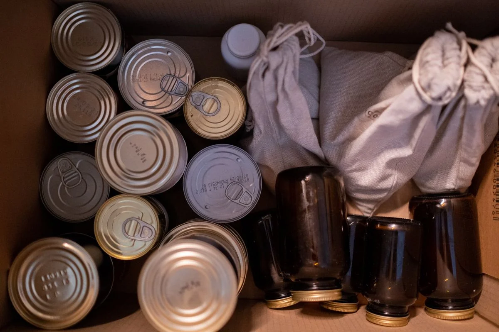

Small Power and Emergency Gear for a 72-Hour Kit: The Cheap Items That Earn Their Place
What small gear actually earns a place in a 72-hour kit?
Five small items finish a 72-hour kit after the big power station: a power bank for phones, a weather radio for alerts when the signal is gone, a water filter for drinking water, and food that needs only water. Each one is cheap next to a station and useful on its own. Buy them one at a time, test each at home, and keep them together in one box so the kit is ready when you need it.
Our pick: Anker 737 Power Bank (PowerCore 24K) — the one small item that earns its place first: 24,000mAh and 140W max output across three ports, so it can charge phones, a tablet and a laptop from one brick.
Check price on AmazonAffiliate link to be added after approval. No price shown here — check it on Amazon.
At a glance
| Product | Best for | Check price |
|---|---|---|
| Anker 737 Power Bank (PowerCore 24K) | Phones, a tablet and a laptop from one brick | Link pending |
| FosPower NOAA Emergency Weather Radio (Model A1) | Cheapest radio, with a light and a phone top-up | Link pending |
| Midland ER310 Emergency Crank Radio | Longest radio battery life and weather alerts | Link pending |
| LifeStraw Personal Water Filter | Drinking water when stored water runs out | Link pending |
| ReadyWise 120 Serving Emergency Food Supply | Food for one person for about two weeks | Link pending |

We may earn a commission if you buy through links on this page. As an Amazon Associate I earn from qualifying purchases.
What you need
Five small items our research scored for a 72-hour kit, after the big power station. No prices here on purpose — check the price on Amazon, and check each item against the kit you already have.
Anker 737 Power Bank (PowerCore 24K)
24,000mAh with 140W max output (Power Delivery 3.1) across two USB-C ports and one USB-A port, plus a digital display that shows output power and recharge time. Anker's own page says it can charge an iPhone 13 almost five times. At 630 g it is a brick, not a pocket bank — it is the one to grab when the phones, the tablet and the laptop all need power.
Watch out: The 140W output needs a cable that supports PD 3.1 and a device that supports PD 3.1 input — Anker's own FAQ says so. With an ordinary cable, it charges at ordinary speed.
Check price on AmazonAffiliate link to be added after approval. No price shown here — check it on Amazon.
FosPower NOAA Emergency Weather Radio (Model A1)
AM, FM and NOAA weather bands, with four ways to power it: solar panel, hand crank, USB charging and AAA batteries. It also packs a 7,400mWh (2,000mAh) power bank, a 1W LED flashlight, a 4-LED reading light and an SOS alarm, at 310 g, with a limited lifetime warranty.
Watch out: The 2,000mAh power bank is an emergency top-up, not a full phone charge. FosPower's own page showed all colours out of stock on 11 November 2026 — check availability before you buy.
Check price on AmazonAffiliate link to be added after approval. No price shown here — check it on Amazon.
Midland ER310 Emergency Crank Radio
Seven NOAA/NWS weather alert channels with a rechargeable lithium-ion battery that Midland says gives up to 45 hours of normal use. It charges three ways — solar, hand crank and USB — and also runs on AA batteries. It has a Cree LED flashlight, an SOS Morse code flashlight beacon and an ultrasonic dog whistle.
Watch out: Midland's own FAQ says the phone charging is emergency-only: its 2,600mAh battery will not meaningfully charge a modern phone. Treat it as a radio and a light, not a power bank. Midland's page also showed it temporarily out of stock on 11 November 2026.
Check price on AmazonAffiliate link to be added after approval. No price shown here — check it on Amazon.
LifeStraw Personal Water Filter
A 0.2-micron membrane microfilter that removes 99.999999% of bacteria and 99.999% of parasites and microplastics, and meets US EPA and NSF P231 drinking water standards. It lasts up to 1,000 gallons (4,000 L), has an unlimited shelf life, and weighs 1.6 oz — small enough to live in the kit for years without a thought.
Watch out: You drink through it one person at a time — it does not fill a jug for the household, and it needs a water source to draw from. Check the manufacturer's page for what it does not remove before relying on it.
Check price on AmazonAffiliate link to be added after approval. No price shown here — check it on Amazon.
ReadyWise 120 Serving Emergency Food Supply
120 servings in one bucket, with 24,540 calories in total — ReadyWise's own page says that is 13 days of food at 1,800 calories per day for one person. The food is sealed in Metallyte pouches, has a shelf life of up to 25 years, and the bucket weighs 20 lbs with a grab-and-go handle.
Watch out: A serving is about 205 calories, so 120 servings is roughly 13 days for one person, not 120 meals. The whole bucket also needs about 120 cups of water to prepare, so store water with the food — and check the allergens (milk, soy and wheat) before you buy.
Check price on AmazonAffiliate link to be added after approval. No price shown here — check it on Amazon.
How to pick
- List what your big station does not cover. A station runs things. It does not tell you the weather, filter water, or feed you. The small items in this guide fill those gaps.
- Buy the radio first. Alerts are the one thing you cannot improvise. Check for NOAA weather channels and a way to power it without the grid — hand crank, solar, or spare batteries.
- Match the power bank to your phone, not your laptop. Check the ports and wattage against the devices you actually carry every day, and remember that the top wattage needs the right cable.
- Test everything on a normal day. Crank the radio, drink through the filter, cook one pouch of the food, and charge a phone from the bank. Do that on a normal day, not during a storm.

Photos still needed
No hands-on test photos exist yet for this guide. Still missing — needs real at-home photos of the actual models:
- The Anker 737 charging a phone and a laptop at home, display visible
- The FosPower A1 and the Midland ER310 side by side, flashlights on
- The LifeStraw in use at a tap or a stream
- The ReadyWise bucket open, with one pouch cooked and served
- All five items packed together in one box
Comparison
| Product | Best for | What to check before you buy | Watch out for |
|---|---|---|---|
| Anker 737 Power Bank (PowerCore 24K) | Phones, a tablet and a laptop from one brick | Capacity (24,000mAh), 140W max output, 3 ports | 140W needs a PD 3.1 cable and device; heavy at 630 g |
| FosPower NOAA Emergency Weather Radio (Model A1) | Cheapest radio, with a light and a phone top-up | 4 power sources, NOAA bands, 2,000mAh bank | Small bank — emergency top-up only; check availability |
| Midland ER310 Emergency Crank Radio | Longest radio battery life and weather alerts | 7 NOAA channels, up to 45 hours of normal use, AA option | Phone charging is emergency-only; check availability |
| LifeStraw Personal Water Filter | Drinking water when stored water runs out | 0.2-micron filter, up to 1,000 gallons, unlimited shelf life | One person drinks at a time; needs a water source |
| ReadyWise 120 Serving Emergency Food Supply | Food for one person for about two weeks | 120 servings, 24,540 calories, up to 25-year shelf life | Needs about 120 cups of water; check allergens |
How we picked
These 5 products are part of the 25 products scored in HomeTryout's November 2026 research across the four test areas. Specs in this guide come from the manufacturers' own pages, listed in Sources below.
| Products scored in our research | Products in this guide | Hands-on tests run |
|---|---|---|
| 25 | 5 | 0 — none yet |
What we have not done yet: no product in this guide has been tested hands-on by us. When we test one at home, this box will say so, with the date.
Troubleshooting
The radio picks up no weather alerts
Check the WX alert mode is on and that you are tuned to the right NOAA channel for your county — Midland's own FAQ says the wrong channel is the first thing to check. Try it near a window, and check the battery is charged: solar alone will not charge a dead battery on either radio.
The power bank charges a phone slowly, or not at all
Check the cable first: the Anker 737 only reaches 140W with a PD 3.1 cable and a PD 3.1 device. Check the bank's display for output power, and charge the bank fully from the wall before you judge it.
The water filter is hard to draw through
Check both caps are open and the straw is fully in the water. A filter that gets harder to draw through usually needs cleaning — follow the cleaning steps on LifeStraw's own page, and check the filter is still within its 1,000-gallon life.

Frequently asked questions
Why are there two emergency radios in this guide?
They are alternatives, not a pair. The FosPower A1 is the cheaper, lighter option with a reading light; the Midland ER310 runs longer on a charge. Pick one, not both.
How much water do I need for 72 hours?
Ready.gov recommends one gallon of water per person per day — three gallons per person for 72 hours. The ReadyWise bucket needs about 120 cups of water on top of that to prepare all of its food, so store water with the food.
Can a power bank replace the big power station?
No. A power bank keeps phones and small devices going; it will not run a fridge. That is the power station's job — see our power stations guide.
Sources
- Anker — Anker 737 Power Bank (PowerCore 24K): https://www.anker.com/products/a1289?hl=en-US
- FosPower — [Model A1] 2,000mAh Emergency Solar Hand Crank NOAA Weather Radio: https://fospower.com/collections/emergency-radios/products/model-a1-2-000mah-emergency-solar-hand-crank-noaa-weather-radio
- Midland — ER310 Emergency Crank Radio: https://midlandusa.com/products/er310-portable-emergency-crank-weather-radio
- LifeStraw — LifeStraw Personal Water Filter: https://lifestraw.com/en-ca/products/lifestraw?variant=5906834227232
- ReadyWise — 120 Serving Emergency Food Supply: https://readywise.com/products/120-serving-emergency-food-supply
- Ready.gov / FEMA — 72-hour emergency kit guidance (one gallon of water per person per day, three days of food, NOAA radio, flashlight, first aid).
Keep going
 Prep & Power
Prep & PowerPortable Power Stations for a 72-Hour Home Kit: What Actually Matters Before You Buy
What actually matters when buying a portable power station for a 72-hour home kit: size, recharge, and what must stay on.
Read the guide → Kitchen & Cleaning
Kitchen & CleaningRobot Vacuum and Mop, Tested in a Real Home: What to Check Before You Buy
What to check before you buy a robot vacuum and mop: thresholds, pet hair, mop contact, and noise.
Read the guide → Pet Tech
Pet TechAutomatic Litter Boxes, Tested at Home: What a Cat Owner Should Know Before You Buy
What a cat owner should know before buying an automatic litter box: size, noise, running costs, and the cat.
Read the guide →